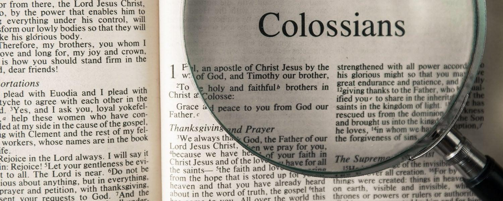

Contents

Colossians is a place where the teachings of Sha’ul (Paul) are being twisted.
Sha'ul repeatedly instructs the scattered Lost Sheep of the House of Yisra'el to observe the feasts, particularly emphasizing the importance of celebrating Pesach and the Feast of Unleavened Bread.
Qorintiyim Aleph/1 Corinthians 56Your boasting is not good. Do you not know that a little leaven leavens the entire lump? 7Therefore cleanse out the old leaven, so that you are a new lump, as you are unleavened. For also Messiah our Pěsacḥ was slaughtered for us. (on Pesach/Passover not Good Friday) 8So then let us celebrate the festival (of Unleavened Bread), not with old leaven, nor with the leaven of evil and wickedness, but with the unleavened bread of sincerity and truth.
Sha'ul urged the Colossian church, whom he had instructed well, to abide by the teachings of the Torah. They were being criticized by their pagan neighbours for following The Torah in the Roman province of a pagan community. Sha'ul promoted the observance of the Kosher Laws, Feasts, New Moons, and Shabbats because he believed that through these practices, people could gain insight into spiritual truths through physical rituals and symbolic representations.
Sha’ul is literally teaching the reality of learning through Physical to Spiritual parallels below:
Qolasim/Colossians 216Let no one therefore judge you in eating or in drinking, or in respect of a festival or a new moon or Sabbaths (PLURAL)– 17which are a SHADOW OF WHAT IS TO COME – but the Body of the Messiah, Yahushua.
The weekly Sabbath on the 7th day is a representation of the millennium reign, and it is symbolically fulfilled in the Spring Feasts. *The Fall Feast is still to be fulfilled. *
1. Pesach [Passover] – “crucifixion”
2. Chag HaMatzot [Unleavened Bread] - put in the grave
3. Yom HaBikkurim [First Fruits] - resurrection
4. Shavu'ot [Pentecost] - received Ruach Ha Qodesh [Set-Apart Spirit]
*FALL FEASTS PROPHETIC SHADOW PICTURES OF GOOD THINGS TO COME *
5. Yom Teru'ah [Trumpets] - *Messiah returns*
6. Yom Kippur [Atonement] - *Day of Judgement*
7. Sukkot [Tabernacles] - *Kingdom established on earth*
The rehearsals and shadows in Vayiqra/Leviticus 23 all point to the Messiah. For many years, the Christian Church has interpreted the Scripture to suggest that Sha'ul was rebuking the church for adhering to the teachings of "Judaizers" who came later and advocated for the observance of the Torah.
Like Sha'ul appeared to be upset that the Torah/Law was being observed, this is absurd. Jews were indifferent to what they saw as "non-Jewish pagans" or what Sha'ul was up to. They were already criticizing Sha’ul for reaching out to the Gentiles in the first place.
Why did they pursue him and spend time convincing non-believers to support Sha'ul? These were The Lost Sheep of the House of Yisra’el living among the Gentiles who had converted and were being taught by Sha'ul to keep The Torah, which they desired to follow in their hearts. They were already showing visible signs of living it as if it were ingrained in their hearts.
Their pagan neighbours were criticizing them for their unconventional behaviour. Sha'ul explicitly stated that no one should pass judgment on them for their actions. It's remarkable how we can be unaware of the true meaning of Scripture because we read it with the influence of our own teachings.
It is possible that Sha'ul is being dishonest by saying one thing and teaching another and is also spreading false teachings that go against the explicit statements of Yahushua and יהוה? Alternatively, it could be that the Christian Church has misrepresented Sha'ul's teachings.
Is The Christian Church in rebellion of יהוה and His Torah/Law, and have they distorted scripture to support their disobedience? In Christianity, we have been conditioned to believe in a "different gospel" that claims "Jesus ended The Law."
Galitiyim/Galatians 16I marvel that you are so readily turning away from Him who called you in the favour of Messiah, to a different ‘Good News, 7which is not another, only there are some who are troubling you and wishing to pervert the Good News of Messiah. 8However, even if we, or a messenger out of heaven, bring a ‘Good News’ to you beside what we announced to you, let him be accursed.
Devarim/Deutoronomy 2726‘Cursed is he who does not establish the Words of this Torah.’ And all the people shall say, ‘Amĕn!’
That “other gospel” is The Spirit of the False Messiah (anti-Christ) which leads to The Spirit of Error in those who believe that false gospel. The true gospel of Yahushua the Messiah is that He did not come to abolish The Torah. The Torah is the “terms and conditions” of every COVENANT in Scripture. Obedience to The Torah is righteousness:
Romiyim/Romans 213For not the hearers of the Torah are righteous in the sight of Elohim, but the doers of the law shall be declared right.
The lawless will be gathered up and taken out.
Mattithyahu/Matthew 1341“The Son of Aḏam shall send out His messengers, and they shall gather out of His reign all the stumbling blocks, and those doing lawlessness
The claim that "Jesus got rid of The Law" is not true. This is the reason behind the complete destruction of the Earth.
Yeshayahu/Isaiah 245For the earth has been defiled under its inhabitants, because they have transgressed the Torot (plural of Torah), changed the law, broken the everlasting covenant.
Violated the laws of the Torah, replaced the sacred celebrations with Christian pagan holidays, and disregarded the eternal agreement of observing the Shabbat by worshipping on the pagan day of Sunday.
Yeshayahu/Isaiah 246Therefore a curse shall consume the earth, and those who dwell in it be punished. Therefore, the inhabitants of the earth shall be burned, and few men shall be left.
The “curse” Yeshayahu/Isaiah is referring to that destroys the Earth is the curse for “transgressing The Torah of יהוה” (Take note it is NOT the Torah of the JEWS)
Devarim/Deutoronomy 2726‘Cursed is he who does not establish the Words of this Torah.’ And all the people shall say, ‘Amĕn!’ Obedience to The Torah is what sanctifies us leading to righteousness.
Romiyim/Romans 616Do you not know that to whom you present yourselves slaves to obey, you are that one’s slaves whom you obey, whether of sin (not keeping The Torah) leading to death, or of obedience (to The Torah) leading to righteousness?
Romiyim/Romans 619I am speaking in simple terms because of the frailty of your human nature. Just as you once offered the parts of your body as slaves to impurity and to greater and greater disobedience (to The Torah), so now, in the same way, you must offer the parts of your body as slaves to righteousness (which is keeping The Torah) that leads to sanctification.
Romiyim/Romans 213For it is not those who hear The Torah who are righteous in יהוה's sight, but it is those who OBEY The Torah who will be declared righteous.
Eternal Life is the promise for obedience to The Torah.
Mattithyahu/Matthew 1916And someone came to Him and said, “Teacher, what good thing shall I do that I may obtain eternal life?” … if you wish to obtain eternal life, keep the commandments (of יהוה, Eternal Life is the promise for obedience to The Torah).”
Yochanan/John 1250“And I know that His command is everlasting life. Therefore, whatever I speak, as the Father has said to Me, so I speak.”
Chazon/Revelation 2214“Blessed are those doing His commands so that the authority shall be theirs unto the tree of life, and to enter through the gates into the city.
Those who abolish The Torah of יהוה do not enter The Kingdom.
Mattithyahu/Matthew 13 English Standard Version41The Son of Man will send his angels, and they will gather out of his kingdom all causes of sin and all lawbreakers.
Mattityahu/Matthew 721-23 "Not everyone who says to Me, Master, Master, shall enter the kingdom of heaven, but he who does the will of my Father (keeps His Commandments) in heaven. Many will say to Me in that day, Master, Master, have we not prophesied in Your name, and cast out demons in Your name, and done many wonders in Your name? And then will I (Yahushua) declare to them, I never knew you, depart from Me, you who practice lawlessness" (you who are without The Torah/Law of יהוה).
Qorintiyim Bet/2 Corinthians 6 English Standard Version14Do not be unequally yoked with unbelievers (true believers keep The Torah). For what partnership has righteousness (lawkeepers) with lawlessness (law breakers)? Spiritual Maturity is found in practicing The Torah.
Ib’rim/Hebrews 512For though by this time you ought to be teachers (of the Torah, there was no such thing as the New Testament when he wrote this), you need someone to teach you again the first principles of the oracles of יהוה (The Torah); and you have come to need milk and not solid food. 13For everyone who partakes only of milk is unskilled in the word of righteousness (Righteousness is Keeping The Torah so “word of righteousness” is The Torah), for he is a babe. 14But solid food belongs to those who are of full age (mature Saints with minds set on The Law of the Spirit of Life), that is, those who by reason of use (keeping the Feasts/Torah/Sabbaths) have their (Spiritual) senses exercised (trained through physical to Spiritual parallels) to discern both good and evil (which is defined by The Torah of יהוה, good is obedience to His Commands, evil is breaking them). Belief and obedience
Chazon/Revelation 38“I know your works – see, I have set before you an open door, and no one is able to shut it – that you have little power, yet have guarded My WORD (TORAH), and have not denied My NAME. (יהוה and Yahushua)
Chazon/Revelation 310“Because you have guarded My Word of endurance (Torah), I also shall guard you from the hour of trial which shall come upon all the world, to try those who dwell on the earth.
Chazon/Revelation 69 "And when He opened the fifth seal, I saw under the altar the beings of those having been slain for the Word of Elohim (Torah) AND for the witness which they held, Yahushua"
Chazon/Revelation 1217 " And the dragon was enraged with the woman, and he went to fight with the remnant of her seed, those guarding the commands of Elohim (Torah) AND possessing the witness of Yahushua Messiah".
Chazon/Revelation 1412 "Here is the endurance of the set-apart ones, here are those guarding the commands of Elohim (Torah) AND the belief of Yahushua."
Chazon/Revelation 204 "And I saw thrones – and they sat on them, and judgment was given to them – and the lives of those who had been beheaded because of the witness they bore to Yahushua AND because of the Word of Elohim (Torah), and who did not worship the beast, nor his image, and did not receive his mark upon their foreheads or upon their hands. And they lived and reigned with Messiah for a thousand years."
The Renewed Covenant is an agreement between those who enter it and יהוה.
Both parties must adhere to the Terms and Conditions of the agreement to achieve the intended outcome of receiving eternal life through the fulfilment of the agreement.
This life serves as preparation for our future roles, and we need to surrender our will to fulfil our purpose in the next life.
A few of the terms and conditions are:
We must have our minds sealed by יהוה
We must obey The Torah of יהוה in its Spiritual Intent
We must express our faith in Yahushua as The Pesach (Passover) Lamb
We must be Mikvah’d (Baptized/Immersed)
We must walk in the example set by Yahushua
We must display the Sign of the sons of יהוה - The Shabbath
We must keep Pesach “in remembrance” of Yahushua
We must have the same testimony יהוה gave Yahushua
We must boldly defend and protect The Torah and Prophets
We must boldly declare our birthright as sons of יהוה
We must learn to righteously judge according to His Torah/Law
We must submit our lives to יהוה
We must give this life up
We must keep all the Festivals of יהוה
The Renewed Covenant is not a place we visit on Sundays just to socialize, dress up and be entertained as if it were a country club. The Renewed Covenant is a daily commitment to live in a way that honours our Creator יהוה and acknowledges Yahushua as our King.
Living according to the terms of The New Covenant should create conflict between us and the values and people of this world. It is important for us to educate ourselves and faithfully follow His teachings so that we can stand proudly when our King arrives in the Kingdom of יהוה, where יהוה has ordained special days of celebration. We are instructed to observe these sacred days of celebration as they represent יהוה 's Plan for salvation.
These sacred days were a preview of things to come and actual rehearsals of upcoming events as they were instructed. Certain events have already taken place in history and are now celebrated as important anniversaries of past achievements.
The sacred occasions are referred to as The Appointed Times of יהוה, and Celebrations of יהוה. In Hebrew, these are known as moedim. The moedim were instituted by יהוה as practice sessions to instruct the people of יהוה on the work the Messiah would come to fulfill and bring about salvation.
Yahushua's identity as the Messiah was determined by these sacred days, and by observing them, we can distinguish the real Messiah from the counterfeit one.
All of these are sacred gatherings that must be honoured according to the prescribed customs. Community of genuine believers. These mo’edim are not referred to as "Jewish Festivals" or "the Festivals of Mosheh," as Christianity falsely depicts them. They are יהוה’s Festivals and are commanded to be kept by His true sons.
Celebrating these festivals is a way to show that our faith is alive and meaningful, as we know that faith without action is meaningless. Having faith and demonstrating obedience through our actions leads to perfection. We understand that our justification comes not just from faith, but from the combination of faith and actions.
Yasher/Jasher 2
14 My brothers, what use is it for anyone to say he has belief but does not have works? This belief is unable to save him. 15 And if a brother or sister is naked and in need of daily food, 16 but one of you says to them, “Go in peace, be warmed and be filled,” but you do not give them the bodily needs, what use is it? 17 So also belief, if it does not have works, is in itself dead. 18 But someone might say, “You have belief, and I have works.” Show me your belief without your works, and I shall show you my belief by my works. 19 You believe that Elohim is one. You do well. The demons also believe – and shudder! 20 But do you wish to know, O foolish man, that the belief without the works is dead? 21 Was not Abvraham our father declared right by works when he offered Yitcsḥaq his son on the altar? 22 Do you see that the belief was working with his works, and by the works the belief was perfected? 23 And the Scripture was filled which says, “Abvraham believed Elohim, and it was reckoned to him for righteousness.” And he was called, “Elohim’s friend.” 24 You see, then, that a man is declared right by works, and not by belief alone. 25 In the same way, was not Raḥaḇ the whore also declared right by works when she received the messengers and sent them out another way? 26 For as the body without the spirit is dead, so also the belief is dead without the works.
We should observe these Festivals as they were given to us by Him to impart essential spiritual insights. If people had continued to observe the Festivals of יהוה, they would not have been deceived by the "False Messiah/Jesus" who did away with the Torah.